В настоящее время высокотемпературные органические теплоносители (ВОТ) широко применяются во многих отраслях промышленности для обеспечения теплообмена и нагрева вплоть до температур 400 оС
Условия правильной эксплуатации, позволяющие свести к минимуму процессы термодеструкции и их последствия, играют решающую роль. Во многих случаях конструктивное решение системы, обеспечивающее условия правильной эксплуатации, имеет гораздо большее значение, чем выбор какого-либо конкретного ВОТ.
Одной из основных стадий при производстве фталоцианина меди (ФЦМ) является стадия нагрева ВОТ. ВОТ обеспечивает необходимый температурный режим на стадии синтеза ФЦМ и, следовательно, качество получаемого продукта.
Технологический процесс нагрева ВОТ осуществляется в теплогенераторе поз.250 (рисунок 1.1) [1].
ВОТ поступает в теплогенератор поз 250 при температуре 205±15 ºС при давлении равном 6±2 кгс/см2 [2].
Требуется обеспечить поддержание температуры ВОТ на выходе из теплогенератора поз.250 на уровне 240±10 ºС. Для нагрева ВОТ используется дымовые газы, образующиеся в результате сгорания природного газа в печи теплогененратора. Воздух для горения газа предварительно подогревается в воздухоподогревателе поз.256. Установка должна быть снабжена системой сигнализации, оповещающей о превышении нормы концентрации метана составляющей 0-50 %НКПР и угарного газа - 0-200 мг/м3 в помещении. На выходе из теплогенератора нужно вести контроль давления 0-5 кгс/см2 [2].
Продукты горения удаляются через воздухоподогреватель поз.256 в дымовую трубу, при этом должен происходить контроль температуры отходящих газов.
Нагретый ВОТ подается в рубашку реактора синтеза фталоцианина меди (ФЦМ) при температуре 240±10 ºС, после отдачи тепла в реакторе ВОТ поступает по обратной магистрали в теплогенератор поз.250 на нагрев [2].
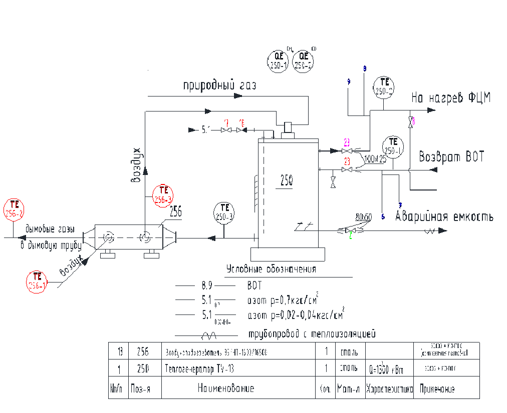
Рисунок 1.1 - Технологическая схема процесса нагрева ВОТ
АСУ ТП нагрева высокотемпературного органического теплоносителя предназначена для автоматизации оперативного контроля, защиты и управления технологическим процессом производства.
Целью создания АСУ ТП является повышение эффективности и качества процесса за счет использования современных микропроцессорных средств управления.
Объектом автоматизации является теплогенератор поз 250, циркулирующие насосы 250а и 250б.
В цеху следующие условия:
• температура окружающего воздуха - от +10 ºС до +45 ºС;
• относительная влажность - от 65% до 85% при 25 ºС;
• атмосферное давление - от 84 до 106,7 кПа (от 630 до 800 мм.рт. ст.).
Операторская находится в том же помещении и отгорожена от основного технологического помещения. Основной целью установки перегородок является создание болеет комфортных условий работы обслуживающего персонала. Операторская характеризуется следующими климатическими условиями:
• температура окружающего воздуха - от +10 ºС до +30 ºС;
• относительная влажность - от 65% до 85% при 25 ºС;
• атмосферное давление - от 84 до 106,7 кПа (от 630 до 800 мм.рт. ст.).
В процессе нагрева высокотемпературного органического теплоносителя участвует метан. Попадание метана в помещение цеха может произойти в результате разгерметизации подающих трубопроводов или в результате несрабатывании при этом автоматики защиты.
Автоматизированная система управления процессом нагрева высокотемпературного органического теплоносителя должна быть способна решать следующие задачи:
1. Необходимо контроль температуры и давления ВОТ на входе и выходе теплогенератора поз.250.
2. Необходимо обеспечить стабилизацию температуры ВОТ на выходе из теплогенератора за счет изменения расхода топливной смеси в камеру сгорания теплогенератора поз.250.
3. Необходимо обеспечить регулирование соотношения расходов газа и воздуха с целью полного сжигания топлива
4. Необходимо обеспечить сигнализацию максимального и минимального значения температуры и давления на входе и выходе теплогенератора поз. 250.
5. Необходимо обеспечить контроль расхода газа в теплогенераторе поз. 250.
6. Необходимо обеспечить сигнализацию максимальной концентрации метана и угарного газа в помещении теплогенератора поз.250.
Функциональные схемы автоматизации (ФСА) являются основным техническим документом, определяющим функционально-блочную структуру отдельных узлов автоматического контроля, управления и регулирования технологического процесса и оснащения объекта управления приборами и средствами автоматизации (в том числе средствами телемеханики и вычислительной техники)
Результатом составления ФСА является: выбор методов измерения технологических переменных и основных технических средств автоматизации; определение приводов исполнительных механизмов регулирующих и запорных органов технологического оборудования; размещение средств автоматизации на щитах, технологическом оборудовании, трубопроводах и определение способов отражения информации о состоянии технологического процесса и оборудования
АСУ ТП представляет собой человеко-машинные системы управления, в которых технические средства осуществляют получение информации о состоянии технологического объекта управления, вычисление критериев качества, нахождение оптимальных управлений, а оператор выполняет анализ этих управлений и их реализацию с помощью локальных автоматических систем регулирования (АСР) или дистанционного управления регулирующими органами
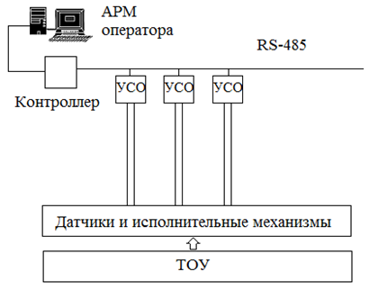
Рисунок 3.1 - Структурная схема АСУТП нагрева ВОТ
УСО - устройство связи с объектом, ТОУ - Технологический объект управления
Автоматизированная система управления процессом нагрева высокотемпературного органического теплоносителя включает контур регулирования температуры нагрева высокотемпературного органического теплоносителя .
Также функциональная схема автоматизации предусматривает контуры контроля температуры в вспомогательных емкостях, управления клапанами подачи азота и аварийного отключения подачи газа в теплогенератор, контроля заназованности помещения.
Ниже приведены Контуры регулирования температуры и безопасности:
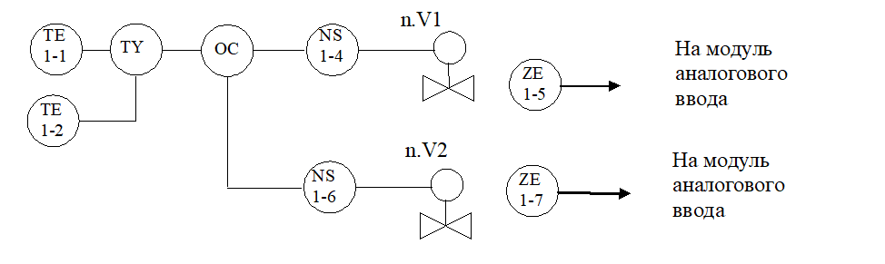
Рисунок 3.2 - Контур регулирования температуры теплоносителя в теплогенераторе
Принципиальные электрические схемы определяют полный состав приборов, аппаратов и устройств, действие которых обеспечивает решение задач управления, регулирования, защиты, измерения и сигнализации. Принципиальные схемы выполняют на основании функциональной схемы автоматизации, а также по руководству по эксплуатации и монтажу средств автоматизации.
Ниже приведены некоторые схемы подключения приборов:
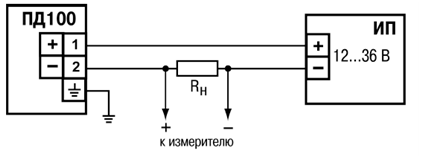
Рисунок 4.1 - Схема подключения датчка давления ПД100-ДИ
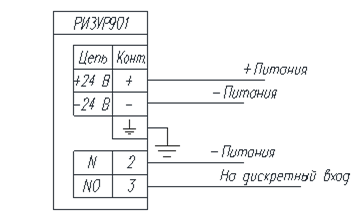
Рисунок 4.2 - Схема подключения датчика уровня РИЗУР-901
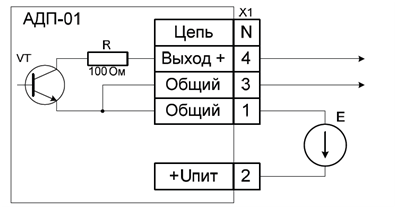
Рисунок 4.3 - Схема подключения датчка контроля пламени АДП-01.9
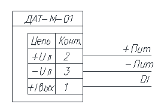
Рисунок 4.4 - Схема подключения датчиков загазованности ДАХ-М-01 и ДАТ-М-01
Функциональная аппаратура верхнего уровня компонуется на базе персональных компьютеров. Компьютер размещается на столешнице офисной мебели, адаптированной для промышленных применений.
АРМ оператора выполнен на базе нерезервированного промышленного компьютера с использованием одной из самых распространенных на российском рынке SCADA-системы «MasterScada».
Использование SCADA-системы позволит существенно повысить эффективность производственного процесса за счет:
• более точного соблюдения технологических нормативов и регламента, и как следствие, уменьшения процента брака и стабилизации качества продукции;
• минимизации рутинных действий диспетчера или оператора, концентрации его внимания на выработке точных и эффективных решений по управлению процессом;
• автоматического выявления аварийных и предаварийных ситуаций, гарантированного оповещения о них;
• анализа факторов, влияющих на качество готовой продукции.
Из технологического регламента был выведена математическая модель на основе которой были построенны статические характеристики.
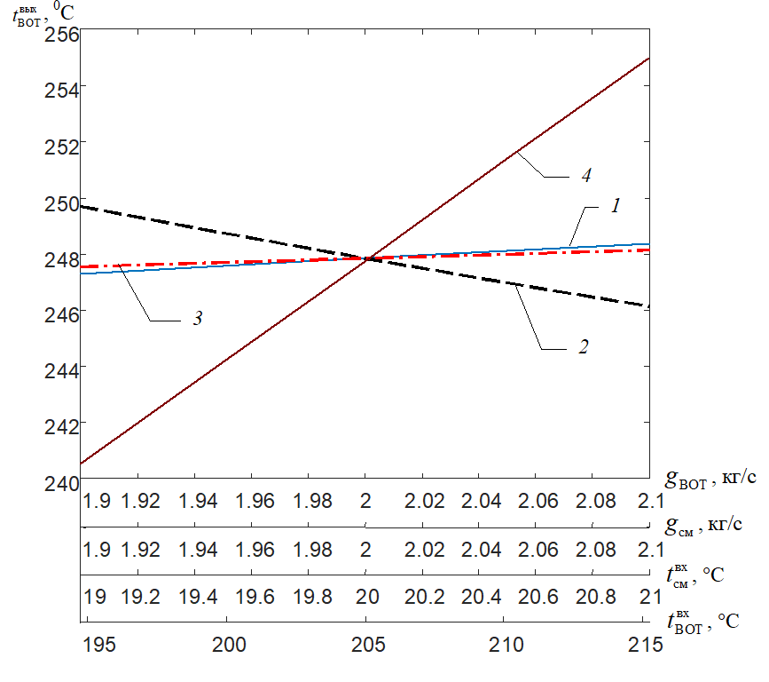
Рисунок 6.1 - Статические характеристики объекта управления
Для расчета и построения статических характеристик разработана программа в среде Matlab, листинг которой представлен ниже:
dt=1;
Tkon=2000;
time=[0:dt:Tkon];
nn=length(time);
gvot=2; % Расход ВОТ
gcm=2;
ck=113;
cvot=1900;
r=37300;
Gk=102;
Tcm_vx=20; % Температура топлива на входе в теплогенератор
rovot=768.56; % Плотность ВОТ
K=100; % Коэффициент теплопередачи
Tk=zeros(1,nn); % Температура в греющей камере
Tk(1)=350;
D=0.2;
L=30;
dl=0.1;
n=L/dl+1;
Tvot=zeros(n,nn);
Tvot_vx=205; % Температура ВОТ на входе в теплогенратор
Tvot(:,1)=230;
S=pi*D^2/4;
F=L*pi*D^2/4;
x_vx=Tvot_vx; %изменяемый входной параметр
xx_vx=[0.95*x_vx:0.025*x_vx:1.05*x_vx];
mm=length(xx_vx);
yy_vix=zeros(1,mm);
% цикл решения уравнений статики
for z=1:mm
% цикл решения уравнений модели методом Эйлера
Tvot_vx=xx_vx(z); %изменяемый входной параметр
for i=2:nn
Tvot(1,i)=Tvot(1,i-1)+dt*(gvot*(Tvot_vx-Tvot(1,i-1))/(rovot*S*dl)+K*pi*D*(Tk(i-1)-Tvot(1,i-1))/(rovot*cvot*S));
int=0;
int=int+Tvot(1,i-1);
for j=2:n
Tvot(j,i)=Tvot(j,i-1)+dt*(gvot*(Tvot(j-1,i-1)-
Tvot(j,i-1))/(rovot*S*dl)+K*pi*D*(Tk(i-1)-Tvot(j-1,i-1))/(rovot*cvot*S));
int=int+Tvot(j,i-1);
end
Tk(i)=Tk(i-1)+dt*(-K*F*(Tk(i-1)-int/n)-gcm*ck*(Tk(i-1)-Tcm_vx)+gcm*r)/(ck*Gk);
end
yy_vix(z)=Tvot(end,end);
fprintf(1,'\n %i %f p=%f',j,xx_vx(z),yy_vix(z));
end
% построение графиков зависимостей
figure(1)
plot(xx_vx,yy_vix);
axis([xx_vx(1) xx_vx(end) 240 256]);
Для регулирования температуры ВОТ на выходе из теплогенератора поз.250 будем изменять расход топливной смеси . Вследствие действия одного наиболее сильного возмущения в качестве структурной схемы регулирования выбираем комбинированную схему автоматической системы регулирования (АСР)
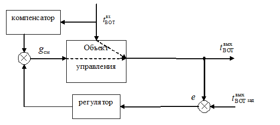
Рисунок 6.2 - Структурная схема АСР температуры ВОТ
Для расчета и построения переходных процессов в АСР разработана программа в среде Matlab, представленная после таблицы с прямыми показателями качества
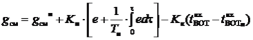
Рисунок 6.3 - Уравнение выходного сигнала АСР
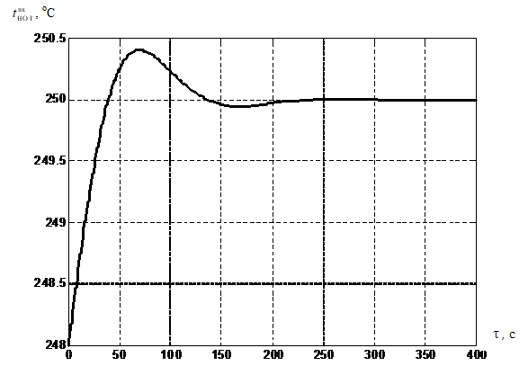
Рисунок 6.4 - Переходной процесс в АСР при изменении задания
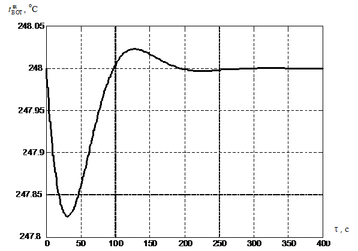
Рисунок 6.5 - Переходной процесс в АСР при действии возмущения
Таблица 6.1 - прямые показатели качества процесса реглирования в АСР
Внешнее воздействие
Полное время регулирования, с
Перерегулирование
Максимальное октлонение
Степенью затухания
Статическая ошибка
Динамическая ошибка
Возмущение
230
-
0.012
0.91
0
0.175
Задание
200
0.003
-
0.98
0
0.4
Листинг программы для построения переходных процессов:
dt=1;
Tkon=2000;
time=[0:dt:Tkon];
nn=length(time);
gvot=2; % Расход ВОТ
gcm_n=2;
ck=113;
cvot=1900;
r=37300;
Gk=102;
Tcm_vx=20; % Температура топлива на входе в теплогенератор
rovot=768.56; % Плотность ВОТ
K=100; % Коэффициент теплопередачи
Tk=zeros(1,nn); % Температура в греющей камере
Tk(1)=350;
D=0.2;
L=30;
dl=0.1;
n=L/dl+1;
Tvot=zeros(n,nn);
Tvot_vx=215;%205; % Температура ВОТ на входе в теплогенратор
Tvot(:,1)=247.8560;
S=pi*D^2/4; % Площадь поперечного сечения
F=L*pi*D^2/4;
% цикл решения уравнений модели методом Эйлера
Kp=-0.01;
Ti=570;
Kk=0.35;
sum=0;
T_zad=247.8560;
Tvot_vx_n=205;
for i=2:nn
e=Tvot(end,i)-T_zad;
sum=sum+e*dt;
gcm=gcm_n+Kp*(e+sum/Ti)-Kk*(Tvot_vx-Tvot_vx_n);
if gcm<0
gcm=0;
end
if gcm>5
gcm=5;
end
Tvot(1,i)=Tvot(1,i-1)+dt*(gvot*(Tvot_vx-Tvot(1,i-1))/(rovot*S*dl)+K*pi*D*(Tk(i-1)-Tvot(1,i-1))/(rovot*cvot*S));
int=0;
int=int+Tvot(1,i-1);
for j=2:n
Tvot(j,i)=Tvot(j,i-1)+dt*(gvot*(Tvot(j-1,i-1)-
Tvot(j,i-1))/(rovot*S*dl)+K*pi*D*(Tk(i-1)-Tvot(j-1,i-1))/(rovot*cvot*S));
int=int+Tvot(j,i-1);
end
Tk(i)=Tk(i-1)+dt*(-K*F*(Tk(i-1)-int/n)-gcm*ck*(Tk(i-1)-Tcm_vx)+gcm*r)/(ck*Gk);
end
% построение графиков зависимостей
figure(1)
plot(time,Tvot(end,:));
PROGRAM PLC_PRG
VAR_INPUT
Ti: REAL;
Xman:REAL; (*Ручной/автоматический*)
Xmin:REAL; (*Минимальное значение расхода*)
Xmax:REAL; (*Максимальное значение расхода*)
Kp: REAL;
Sp: REAL; (*Текущее*)
Pv: REAL; (*Заданное*)
MODE: BOOL;
TwotWH: REAL; (*ВходнаяТемпература*)
END_VAR
VAR
E: REAL;
P: REAL;
dI: REAL;
Kp_Ti: REAL;
I: REAL;
PI: REAL;
Til: REAL;
X: REAL;
XWOZD: REAL; (*нужное положение клапана воздуха*)
XCH4:REAL; (*нужная степень открытия газа*)
UR250a:REAL;
UR250b:REAL;
END_VAR
VAR_OUTPUT
out:REAL;
END_VAR
(*контроль загазованности помещения*)
IF QCH4<=5 THEN (*метан CH4*)
GCH4:=TRUE;
YCH4:=FALSE;
RCH4:=FALSE;
ELSIF QCH4<10 THEN
GCH4:=FALSE;
YCH4:=TRUE;
RCH4:=FALSE;
ELSIF QCH4>=10 THEN
GCH4:=FALSE;
YCH4:=FALSE;
RCH4:=TRUE;
END_IF
IF QCO<100 THEN (*угарный газ CO*)
GCO:=TRUE;
YCO:=FALSE;
RCO:=FALSE;
ELSIF QCO<199 THEN
GCO:=FALSE;
YCO:=TRUE;
RCO:=FALSE;
ELSIF QCO>=199 THEN
GCO:=FALSE;
YCO:=FALSE;
RCO:=TRUE;
END_IF
(*Контроль пламени*)
IF BE=TRUE THEN
BF:=TRUE;
BNF:=FALSE;
ELSE
BF:=FALSE;
BNF:=TRUE;
END_IF;
(*Аварийная ситуация*) (*ЗАКРЫТИЕ/ОТКРЫТИЕ ПОДАЧИ ГАЗА/АЗОТА*)
IF BE=TRUE AND QCH4<10 AND QCO<199 THEN (*затухание пламени*)
KLAPCH4:=TRUE;
KLAPN2:=FALSE;
ELSE
KLAPCH4:=FALSE;
KLAPN2:=TRUE;
END_IF;
(*Загазованность метан/газ*)
IF QCH4>=10 THEN
KLAPCH4:=FALSE;
KLAPN2:=TRUE;
ELSIF QCO>=199 THEN
KLAPCH4:=FALSE;
KLAPN2:=TRUE;
END_IF;
(*Контроль температуры*)
(*РЕГУЛЯТОР*)
Til:=Ti;
IF Ti=0 THEN
Til:=100000;
END_IF;
Sp:=TGWOT;
IF MODE=FALSE THEN
E:=Pv-Sp;
P:=Kp*E;
Kp_Ti:=Kp/Til;
dI:=Kp_Ti*E;
I:=dI+I;
PI:=P+I;
X:=PI;
ELSE
X:=Xman;
END_IF;
IF X<Xmin THEN
out:=Xmin;
ELSIF X>Xmax THEN
out:=Xmax;
ELSE
out:=X;
END_IF;
XCH4:=out;
(*Открытие заслонок*)
IF XCH4-1>CH4 THEN (*ПОДАЧА СИГНАЛА НА ГАЗОВУЮ ЗАСЛОНКУ ОТКРЫТИЕ/ЗАКРЫТИЕ*)
OCH4:=TRUE;
CCH4:=FALSE;
ELSIF XCH4+1<CH4 THEN
OCH4:=FALSE;
CCH4:=TRUE;
ELSE
OCH4:=FALSE;
CCH4:=FALSE;
END_IF;
(*ПОДАЧА СИГНАЛА НА ВОЗДУШНУЮ ЗАСЛОНКУ ОТКРЫТИЕ/ЗАКРЫТИЕ*)
XWOZD:=XCH4*1.2;
IF XWOZD-1>WOZD THEN
OWOZD:=TRUE;
CWOZD:=FALSE;
ELSIF XWOZD+1<WOZD THEN
OWOZD:=FALSE;
CWOZD:=TRUE;
ELSE
OWOZD:=FALSE;
CWOZD:=FALSE;
END_IF;
(*Насосы*)
(*Какой насос работает основной/резервный*)
IF NasO=FALSE AND NasR=TRUE THEN
ArbeitOsn:=FALSE;
ArbeitRez:=TRUE;
ELSE
ArbeitOsn:=TRUE;
ArbeitRez:=FALSE;
END_IF;
IF BE=TRUE AND L250a=TRUE AND T250a<100 AND NasO=TRUE THEN (*Условия работы основного насоса*)
OsnN:=TRUE;
RezN:=FALSE;
ELSIF BE=TRUE AND L250b=TRUE AND T250b<100 AND NasR=TRUE THEN (*Условия работы резервного насоса*)
OsnN:=FALSE;
RezN:=TRUE;
END_IF;
В ВКР поставлена и решена задача выбора технических средств автоматизации, разработки проектной документации на АСУ ТП и разработки прикладного программного обеспечения управляющего контроллера автоматизированной системы управления технологическим процессом нагрева высокотемпературного органического теплоносителя при производстве фталоцианина меди. При этом выполнено следующее:
рассмотрено современное состояние вопроса разработки автоматизированной системы управления процессом нагрева высокотемпературного органического
теплоносителя;
проведен анализ процесса нагрева высокотемпературного органического теплоносителя, а также критический анализ существующей системы управления;
разработано техническое задание на проектирование автоматизированной системы управления технологическим процессом нагрева высокотемпературного органического теплоносителя;
разработана функциональная схема автоматизации процесса, протекающего в помещении теплогенератора и произведен выбор технических средств;
разработаны принципиальные схемы автоматизации;
разработаны схемы общего вида шкафов управления и монтажно-коммутационная схема;
разработан АРМ оператора с использованием SCADA-системы MasterScada и описаны основные видеокадры;